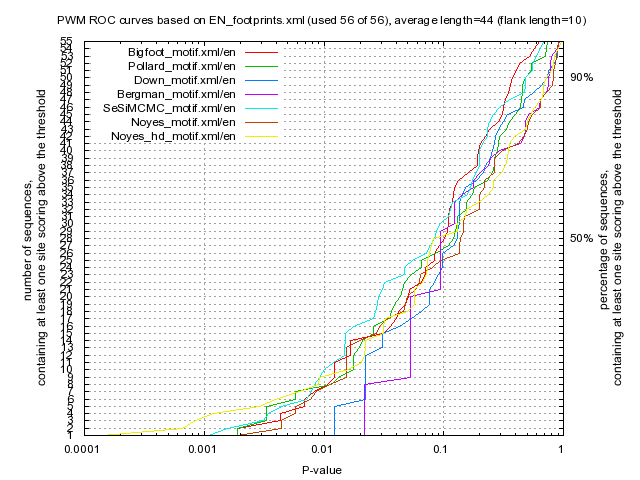

Kulakovskiy I.V., Favorov A.F., Makeev V.J. (2009) Motif discovery and motif finding from genome-mapped DNase footprint data. Bioinformatics 25(18): 2318-2325.
<up> DMMPMM motif EN comparison [dmmpmm_compare_html]
|  |
motif alignment
motif similarity
|
Bigfoot |
Pollard |
Down |
Bergman |
SeSiMCMC |
Noyes |
Noyes_hd |
| Bigfoot |
1.0 |
0.4412 |
0.5026 |
0.4494 |
0.5779 |
0.3981 |
0.4141 |
| Pollard |
0.4412 |
1.0 |
0.2583 |
0.329 |
0.5076 |
0.3138 |
0.3438 |
| Down |
0.5026 |
0.2583 |
1.0 |
0.4254 |
0.3388 |
0.366 |
0.3501 |
| Bergman |
0.4494 |
0.329 |
0.4254 |
1.0 |
0.3692 |
0.5553 |
0.5149 |
| SeSiMCMC |
0.5779 |
0.5076 |
0.3388 |
0.3692 |
1.0 |
0.3385 |
0.3803 |
| Noyes |
0.3981 |
0.3138 |
0.366 |
0.5553 |
0.3385 |
1.0 |
0.6897 |
| Noyes_hd |
0.4141 |
0.3438 |
0.3501 |
0.5149 |
0.3803 |
0.6897 |
1.0 |
|